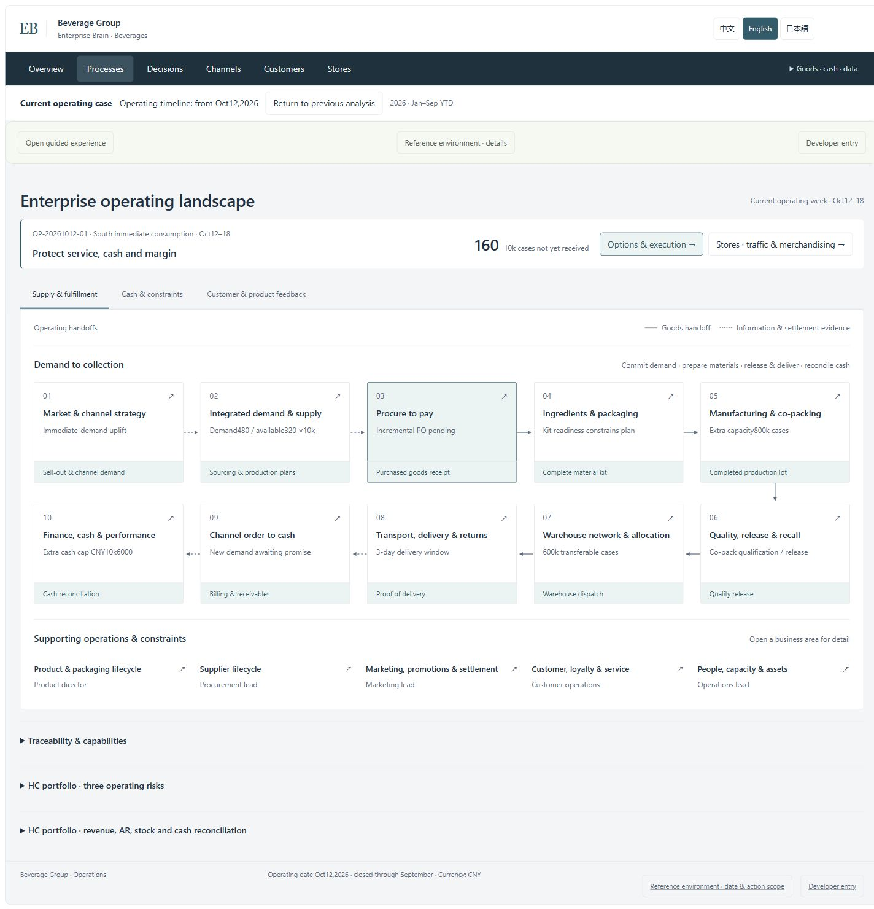
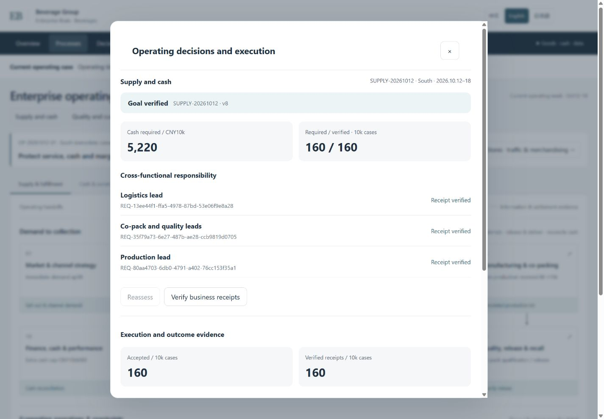

Explore the business case
No installation. Follow the decisions, inspect business areas and explore stores. Interactions change the browser-local reference case.
Explore the operating caseENTERPRISE-OWNED BUSINESS AGENTS
A self-hosted foundation for teams building agents across business systems. Bring shared constraints, owner approval and source receipts into one inspectable task.
Developer preview · Constructed business case · No signup or model key for the browser experience
THE BUSINESS QUESTION
More production is not automatically the right answer. The decision must consider service, stock, available cash and quality together.
Compare production, transfers and co-packing against the same supply requirement, cash cap and quality prerequisites. The business owner decides which tradeoffs are acceptable.
Explore fifteen business areas, operating periods, channels and stores. The supply story is one executable path through the broader blueprint.

No installation. Follow the decisions, inspect business areas and explore stores. Interactions change the browser-local reference case.
Explore the operating caseInstall the source and use the existing approval/runtime contracts against separate constructed sources. Accepted quantities and verified receipts are persisted.
Run the backend locallyThe two modes are separate. The browser case does not call the backend or produce live-model insights.
Existing systems keep their business ledgers. The foundation records process versions, plans, approvals, actions and receipts. A model can propose work; it cannot grant itself permission.
Start with the operating case, then change a source behind a stable contract. Keep identity, approval and recovery behavior visible.
Windows x64 · Node24.19.0 · pnpm11.25.0
node scripts/verify-repository.mjs
pnpm install --frozen-lockfile --ignore-scripts
pnpm typecheck
pnpm build
node scripts/start-reference.mjs --acknowledge-owned-fixtureInstall locked dependencies first. Stop on any failure. The local entry prints a loopback address; it is not a public production service.
The small lab uses the actual GraphTool contract. A new observation sees changed stock; lookup of the original action retains its original receipt—even after reopening the source.
In one maintainer-owned HTTP/SQL recovery test, three source actions committed before their responses timed out. Original-action lookup recovered them, and restart retained their identities.

Enterprise Brain explores cross-system business workflows: shared constraints, explicit approvals and source-backed execution evidence.
Discuss a process or share a redacted reproduction